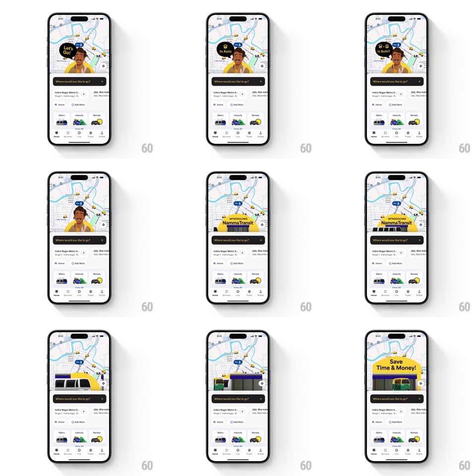

Media
Frame-by-frame

Rebuild this animation 1:1: Namma Yatri's NammaTransit intro - over the live home map, a mascot pops up cycling speech bubbles, then hands off to a metro train illustration that morphs into a bus under "Introducing NammaTransit" and "Save Time & Money!".

Rebuild this animation 1:1: Namma Yatri's NammaTransit intro - over the live home map, a mascot pops up cycling speech bubbles, then hands off to a metro train illustration that morphs into a bus under "Introducing NammaTransit" and "Save Time & Money!".
## Integration
Integration: stack-agnostic spec - springs given as stiffness/damping, timed motions as duration + curve; map every value to your framework and animation library of choice.
## Scene
The standard home screen (map, "Where would you like to go?" search bar, saved places, Metro/Intercity/Rentals row, bottom nav) stays visible while a feature intro plays on the map area: a yellow-shirted mascot with speech bubbles ("Let's Go!", "Metro", "Both?"), then a metro train and bus illustration with the title "Introducing NammaTransit" and a "Save Time & Money!" banner.
## Motion spec
Pattern: sequential feature intro over live UI, ~4s.
- Mascot: rises from behind the search bar (spring ~360/20, 400ms) and cycles three speech bubbles (each pops in, spring ~440/18, 200ms; holds 600ms; pops out).
- Handoff: the mascot slides down out (250ms) as a metro train illustration slides up the map (spring ~320/24, 450ms).
- Morph: the train scales and crossfades into a bus (350ms) while "Introducing NammaTransit" wipes in above it (300ms).
- Banner: the "Save Time & Money!" card springs up over the illustration (spring ~380/18, 350ms) and the sequence holds.
- The underlying UI (search bar, mode row, nav) never moves.
## Calibration
- The intro plays entirely inside the map viewport - the search sheet masks the bottom of every illustration.
- Bubble pops are snappy springs, not fades.
## Reduced motion
Each stage crossfades (250ms) without travel.
## Don't miss
- The mascot exits before the train enters - they never share the screen.
- The final frame keeps the map and chrome fully usable behind the banner.